Перейдём на позицию маркера Часть I и пробуем создать здесь куплет. Действия такие же, как при создании наброска. Эта часть должна весомо отличаться от рефрена по ритму и динамике, чтобы создавать контраст, поэтому простой вариации недостаточно. Куплет и рефрен и должны сочетаться, как две части двухчастной структуры, как вопрос-ответ, аргумент-контраргумент. Если новый отрывок получится слишком чужеродным, вообще не имеющим ничего общего с первым, то его, вероятно, можно будет использовать в качестве интерлюдии/моста. Если слишком похожим, то это вариация рефрена, можно подумать об использовании его на позиции Рефрен II.
В Rosegarden тоже создадим из контекстного меню линейки на этой позиции (34-й такт) маркер Часть I. Все имеющиеся сегменты можно выделить и массово переименовать в Рефрен и проигрыш в параметрах сегмента на панели слева. Новые, соответственно, называть Часть I.
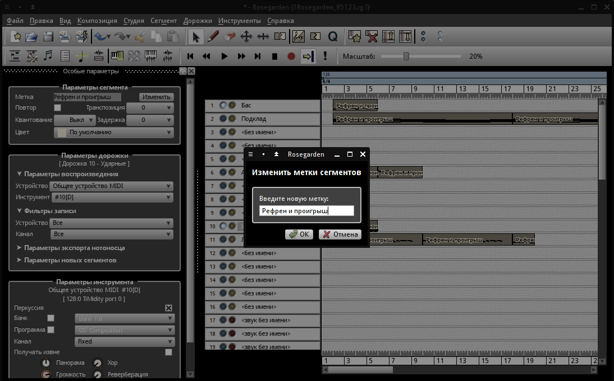Вводим или записываем рисунки ударных и баса. Используем для разнообразия другую бочку, а также райд, играющий восьмыми нотами, чтобы добавить динамики. Исторически сложилось, что этот инструмент почти всегда используются именно так - на ровных долях, более сложные ритмические рисунки для него можно услышать в джазе. Звук второго снейра слишком глухой, поэтому усиливается третьим. Возможно, потом ещё и обработка поможет, если нет, то придётся сменить этот сэмпл. Следим, чтобы бас и бочка начинались на одинаковых долях.
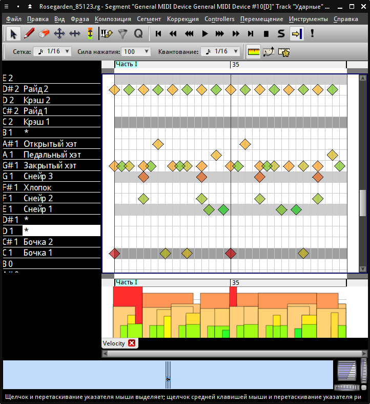 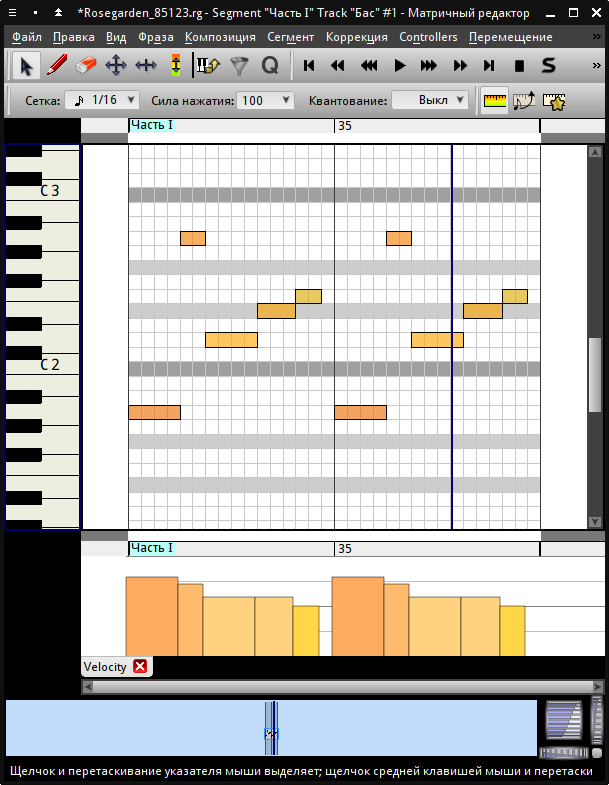Когда готово, запишем получившееся в Adrour. Не забываем отключить перед записью петли. Запись начинаем за такт до первой ноты, останавливаем через такт после последней. Отквантуем (Доля/4, в ударных свинг - 30%), обрежем, скопируем до конца элемента (Ctrl+D).
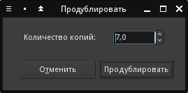 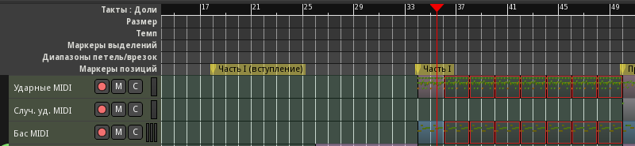Нужны новые ритмы и новые тембры. Создадим ещё три дорожки аккомпанемента под дорожкой арпеджио. Как обычно добавляем фильтры каналов (7, 8, 9), выбираем соответствующие каналы через меню Ardour. Выходы - к шине Аккомпанемент через матрицу маршрутизации, в комнате Claudia подключаем к MIDI-входу. Две нижние дорожки из созданных пока приглушим, а на первой добавим QMidiArp Seq и попробуем создать какой-нибудь ритм 16-ми нотами. Используем синтезатор NoizeMak3r, пресет LD Dirty Snow AS, только потише сделать.
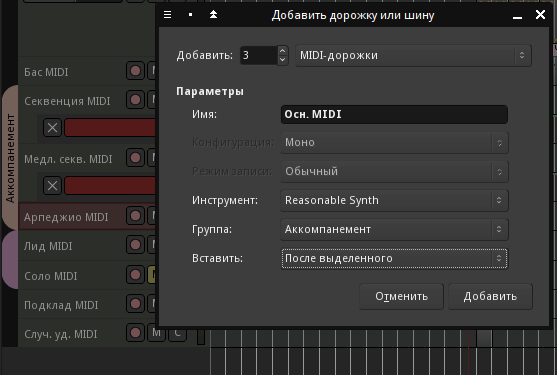 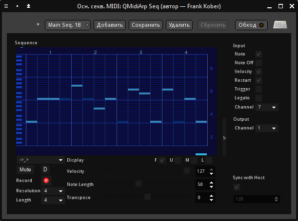 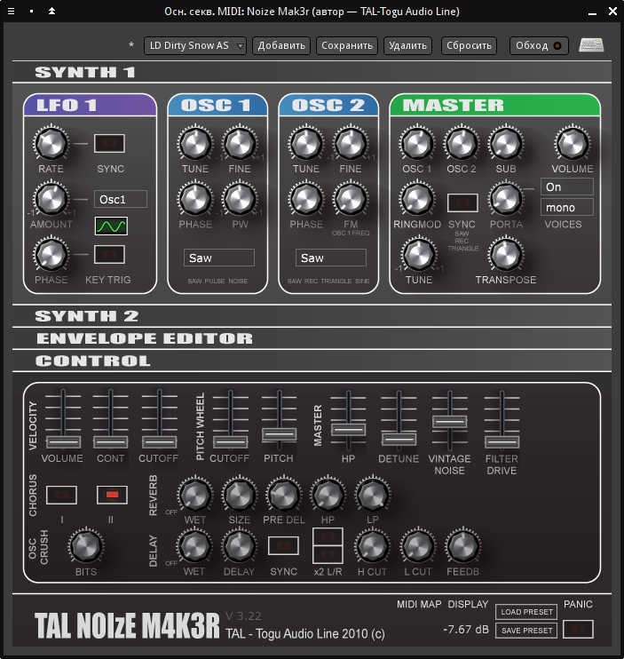Рисуем регион (дорожку можно переименовать в Осн. секв. MIDI) от маркера Часть I, добавляем ноты, автоматизируем отключение. Можно сразу скопировать это и во вступление первой части.
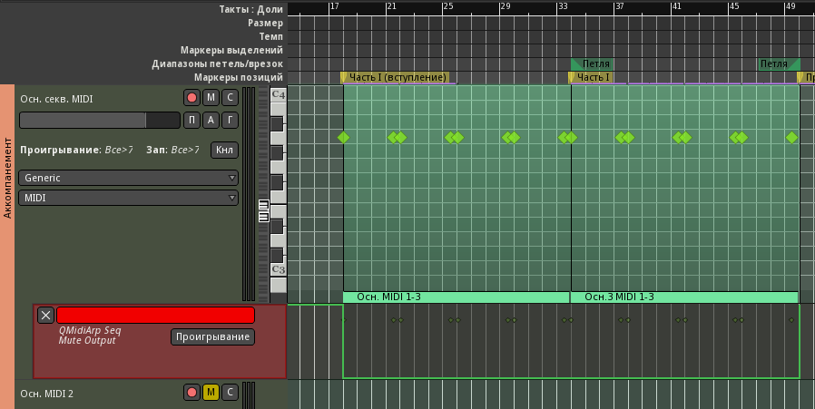Чтобы сохранить целостность композиции, хорошо бы использовать инструменты и секвенции, которые будут играть и в рефрене. Поэтому добавим имеющуюся медленную секвенцию, только пусть сбивается каждый такт, кроме 8-го. И ещё скопируем арпеджио из проигрыша в конец, а в начало вступления первой части можно перенести заглушенные прежде регионы арпеджио из рефрена.
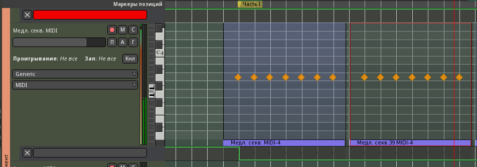 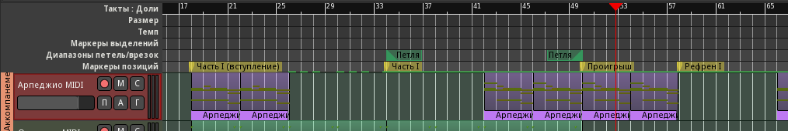Можно бы оставить и так, но лучше добавить лид с какой-нибудь длинной секвенцией или несложной мелодией. Добавим трек Лид 2 MIDI в группу Лиды (MIDI-канал 12), и, после обычных подключений, в Rosegarden попробуем что-нибудь наиграть. Используем NoizeMak3r с немного модифицированным пресетом LD Analog Down Glider TA (отключена задержка, добавлено вибрато, усилен резонанс и прибавлено немного затухания (Decay) в огибающей фильтра, чтобы чётче обозначить начала нот). Фраза 16-тактовая, запишем её в Ardour. Отквантовав и обрезав, повторим дважды (Alt-D).
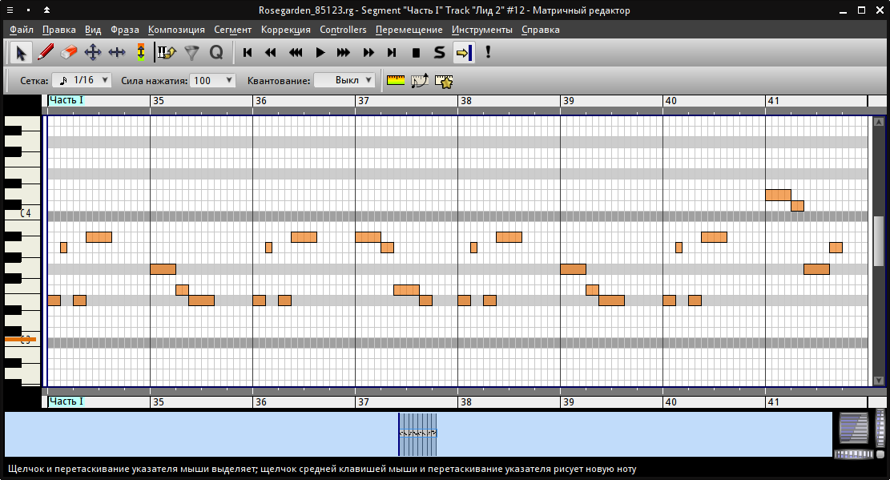 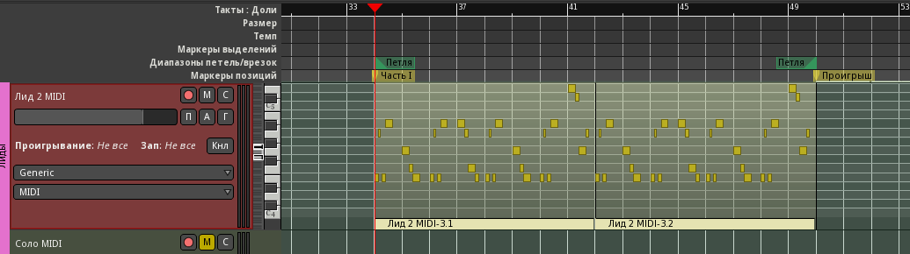Мы уже начали понемногу делать это вступление, добавим теперь бас и ударные с небольшой вариацией. На позицию маркера Часть I (вступление) скопируем по одному региону ударных и баса, отсоединим копии, переименовав новые в Ч1 вступление. Отредактируем, удалив в ударных райд. Валяющийся в этом разделе регион подклада можно приглушить или перенести куда-нибудь далеко вправо по линейке. Обозначим позиции маркера крэшами на дорожке Случ. уд. MIDI. Перед крэшем потом, наверно, будут сбивки.
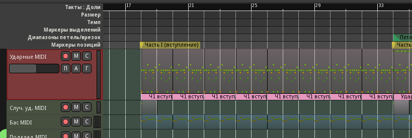Дорожки Подклад MDI и Случ. уд. MIDI используются редко, поэтому перенесём их в самый конец (выделить и Ctrl+вниз).
Сделаем вступление для медленной секвенции, поиграв с автоматизацией кнопки Mute и положением нот.
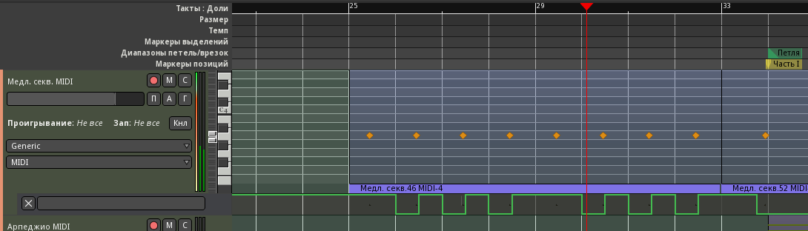Теперь нужно рассмотреть проблемы с переходами на маркерах Часть I и Проигрыш.
В первом случае лид вступает несколько внезапно, это можно исправить "тизером" - вставкой обрывка фразы лида до его вступления. Нечто подобное мы уже сделали выше для медленной секвенции. Просто скопируем первый такт партии лида, чтобы он сыграл до начала фразы. Можно добавить небольшое изменение в последних регионах баса и ударных в окончании вступления. В будущем, возможно, на этой сбивке будет какой-нибудь эффект, а в целом - нормально.
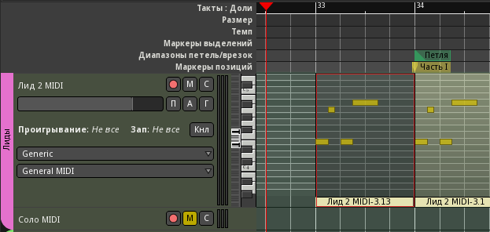 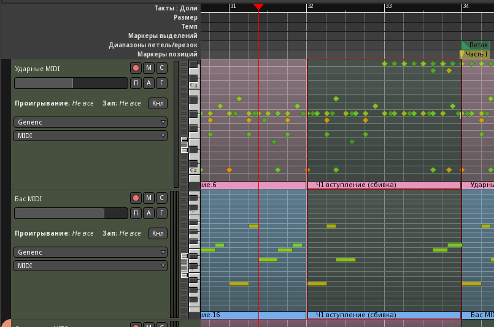Со вторым случаем сложнее, здесь изменяется и рисунок баса, и рисунок ударных, кроме того, вступает новый лид, а старый умолкает. Даже сквозные повторяющиеся партии аккомпанемента не спасают дело. Сделаем тизеры баса и ударных на последнем такте, умолкающие попеременно. Этого должно быть достаточно, чтобы слушатель уловил смену ритма. В лиде последний такт лучше заменить на повторение первого. Оно, кстати, хорошо сочетается с измененным последним тактом баса и циклически отсылает к вступлению этого лида.
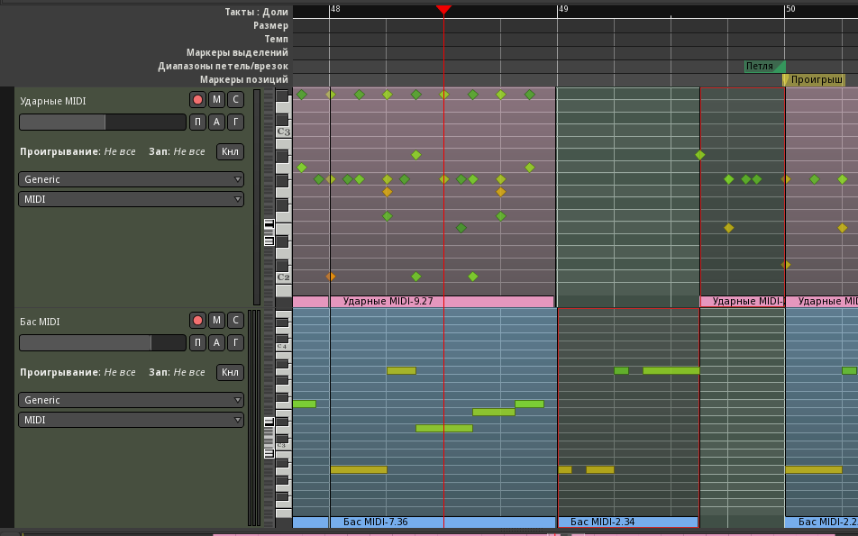 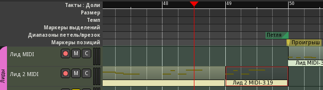Аккомпанемент завершаем следующим образом. Заглушим последний такт арпеджио. Даем доиграть Осн. секв. MIDI до последнего акцента. На время последнего такта приглушаем медленную секвенцию. В последнем такте включаем дорожку Секвенция MIDI.
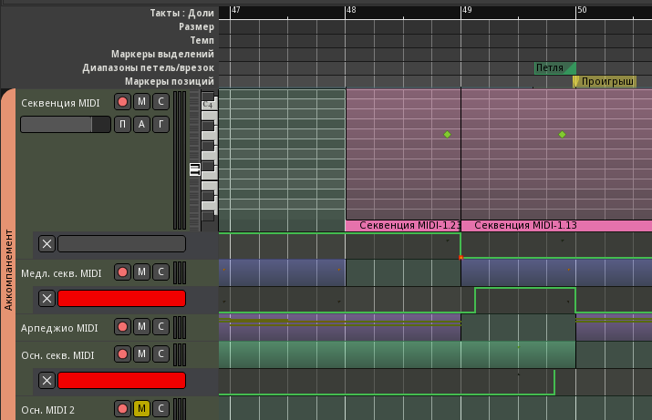Подклад в проигрыше лучше сделать проще; оставим только повторение двух последних аккордов, уменьшив регион слева до середины и скопировав обрезок на начало проигрыша.
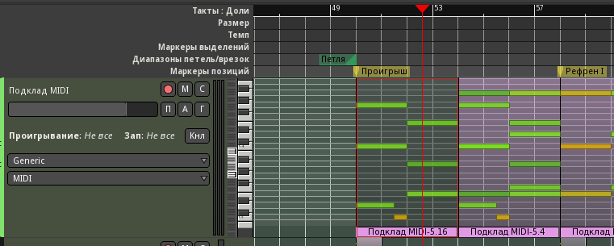Ещё один нюанс: в основной части у нас было много высоких частот, отчасти из-за райда, но особенно из-за дорожки Осн. секв. MIDI. Этих частот в проигрыше недостаёт, отчего он кажется каким-то вялым. В патче синтезатора используется плавающий Notch-фильтр (Band Reject), создающий эффект, подобный фейзеру, и менять его на обычный Low Pass не хотелось бы. Придётся добавить внешний фильтр на эту дорожку и автоматизировать частоту среза, чтобы к концу основной части она почти умолкала. Используем плагин Filter/Calf Filter перед фейдером. Во вступлении начинаем с 1 кГц, постепенно поднимаем до максимума. Там где играет лид, ограничиваемся 7,5 кГц. В конце добавляем затухание обратно до 1 кГц.
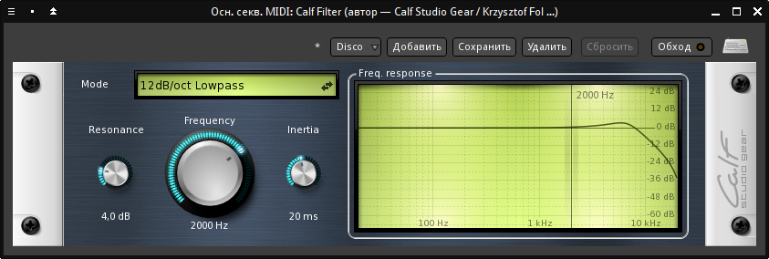 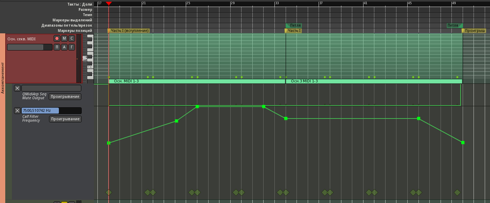